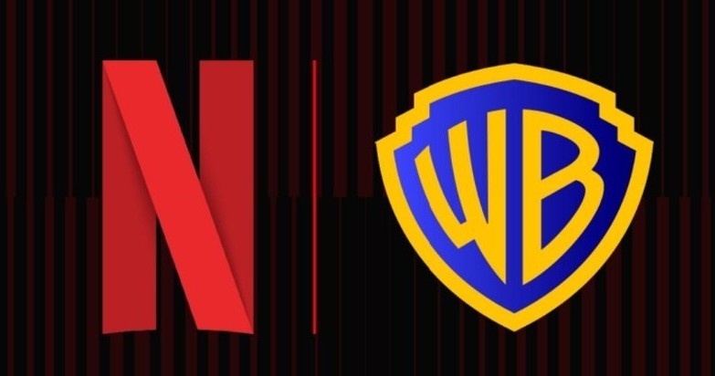

WBD and NFLX Mock Transaction
Analysis Date: 11/20/25
September marked the beginning of this forward-looking exercise—an exploration of how precision modeling and sector fluency can anticipate market movements before they become headlines. With a TMT lens sharpened by experience across Finance and Motion Pictures, I blend disciplined valuation methods with narrative intelligence to pressure-test bold scenarios.
This report projects a full enterprise absorption, assuming Netflix inherits WBD's legacy cable infrastructure while managing $40B in debt obligations. The result is a blueprint for navigating two converging media giants, demonstrating how macro insight, and creative structuring can uncover advantage in an evolving media landscape.
Target Price: $29.17 per share
Anouncement Date: 12/05/25 — Source
Accepted Bid: $27.75 per share
View the Report